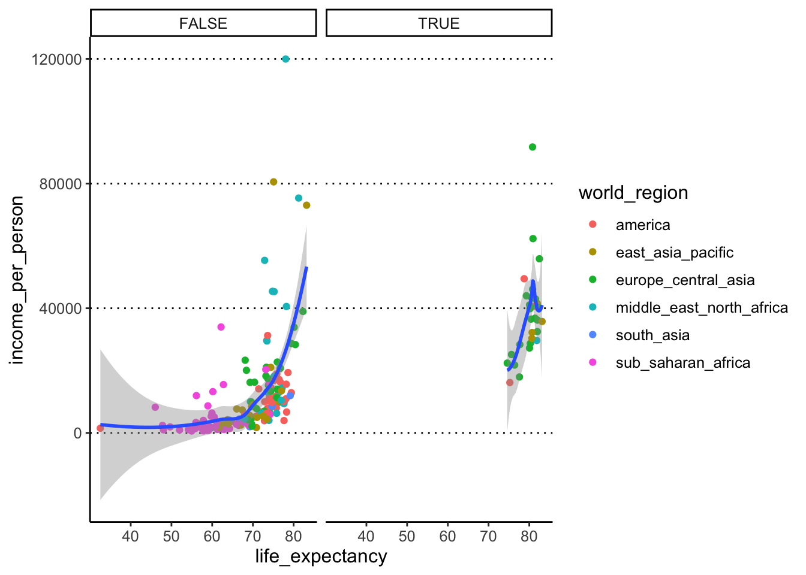
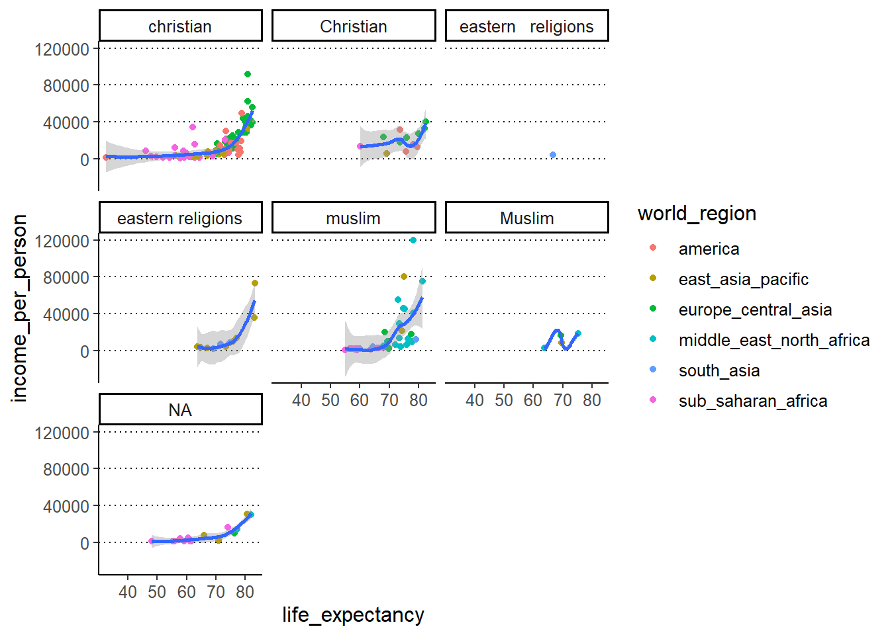
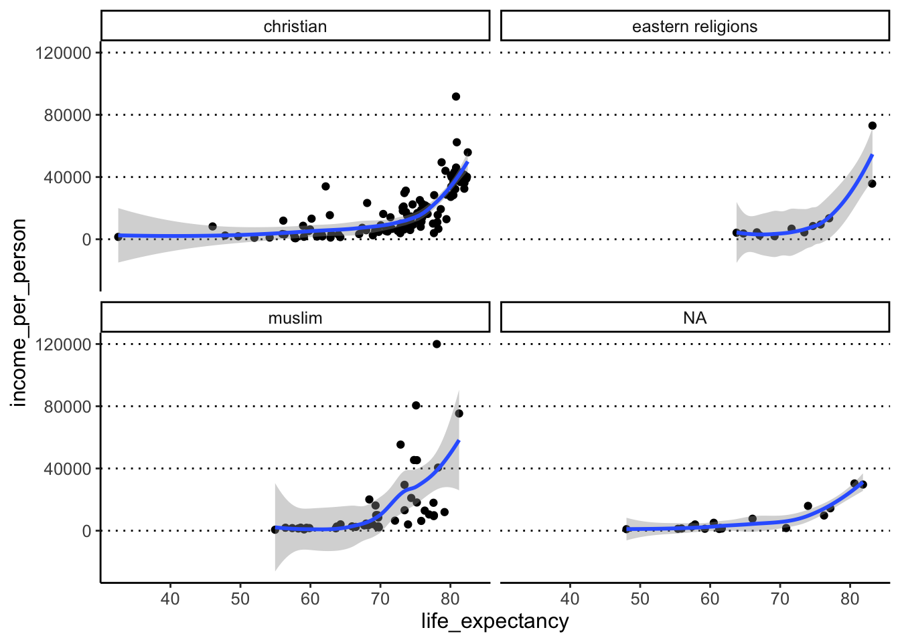

Homework 12 August 2021
These exercises continue from last week’s, so you need to make sure you’ve read the gapminder dataset:
gapminder <- read_csv("data_raw/gapminder2010_socioeconomic.csv")Task 7
Let’s take the scatterplot from our previous exercise and continue working on it:
income_life_expectancy_plot <- ggplot(data = gapminder,
mapping = aes(x = life_expectancy, y = income_per_person)) +
geom_point(aes(colour=world_region)) +
geom_smooth()- Using facets, split your scatter plot from the previous task by the variable
is_oecd.Hint
Clicking the “Zoom” button on the bottom right “Plots” panel of RStudio to see your facetted graph much better (and any other graph for that matter!). - Modify the previous code to facet your plot by
main_religion. Do you identify any issues in this visualisation? - Finally, try facetting by
children_per_woman. What do you think about this visualisation?
Answer
We can use the facet_wrap() function to achieve this:
income_life_expectancy_plot +
facet_wrap(facets = vars(is_oecd))#> `geom_smooth()` using method = 'loess' and formula 'y ~ x'#> Warning: Removed 6 rows containing non-finite values (stat_smooth).#> Warning: Removed 6 rows containing missing values (geom_point).
To facet by a different variable, we can adapt the code above and just replace the variable we are facetting by:
income_life_expectancy_plot +
facet_wrap(facets = vars(main_religion))#> `geom_smooth()` using method = 'loess' and formula 'y ~ x'#> Warning: Removed 6 rows containing non-finite values (stat_smooth).#> Warning in simpleLoess(y, x, w, span, degree = degree, parametric =
#> parametric, : span too small. fewer data values than degrees of freedom.#> Warning in simpleLoess(y, x, w, span, degree = degree, parametric =
#> parametric, : pseudoinverse used at 63.703#> Warning in simpleLoess(y, x, w, span, degree = degree, parametric =
#> parametric, : neighborhood radius 5.9872#> Warning in simpleLoess(y, x, w, span, degree = degree, parametric =
#> parametric, : reciprocal condition number 0#> Warning in simpleLoess(y, x, w, span, degree = degree, parametric =
#> parametric, : There are other near singularities as well. 35.488#> Warning in predLoess(object$y, object$x, newx = if
#> (is.null(newdata)) object$x else if (is.data.frame(newdata))
#> as.matrix(model.frame(delete.response(terms(object)), : span too small. fewer
#> data values than degrees of freedom.#> Warning in predLoess(object$y, object$x, newx = if
#> (is.null(newdata)) object$x else if (is.data.frame(newdata))
#> as.matrix(model.frame(delete.response(terms(object)), : pseudoinverse used at
#> 63.703#> Warning in predLoess(object$y, object$x, newx = if
#> (is.null(newdata)) object$x else if (is.data.frame(newdata))
#> as.matrix(model.frame(delete.response(terms(object)), : neighborhood radius
#> 5.9872#> Warning in predLoess(object$y, object$x, newx = if
#> (is.null(newdata)) object$x else if (is.data.frame(newdata))
#> as.matrix(model.frame(delete.response(terms(object)), : reciprocal condition
#> number 0#> Warning in predLoess(object$y, object$x, newx = if
#> (is.null(newdata)) object$x else if (is.data.frame(newdata))
#> as.matrix(model.frame(delete.response(terms(object)), : There are other near
#> singularities as well. 35.488#> Warning: Removed 6 rows containing missing values (geom_point).#> Warning in max(ids, na.rm = TRUE): no non-missing arguments to max; returning
#> -Inf
This is where we can clearly see how the spelling/formatting mistakes affect our data. Variables are recognised as different if capitalisation is different e.g. “christian” vs “Christian”. There is also a more subtle typo between “eastern religions” (one space between words) and “eastern religions” (two spaces between words). We turn to try and fix this problem in the next exercise.
Finally, we were asked to facet by children_per_woman
income_life_expectancy_plot +
facet_wrap(facets = vars(children_per_woman))#> `geom_smooth()` using method = 'loess' and formula 'y ~ x'
This “works” (as in, the code gives no error). But it is very messy and not informative! This is a good example of how NOT to present data - this would be a more suitable variable to use for “coloured by” as opposed to facet.
Task 8
In previous exercises we have seen that the main_religion column contains several typos. The stringr package (part of tidyverse) is very useful to correct these kinds of mistakes. For example, the function str_squish() removes any whitespaces inside a string. While the function str_to_lower() converts words to lowercase.
You have also seen how to use the mutate() function to modify a column in your table. For example:
gapminder %>%
mutate(income_total = population * income_per_person)- Use
mutate(),str_squish()andstr_to_lower()to fix the typos in themain_religioncolumn in our table.
Answer
We can pipe two mutate() commands, at each step modifying the column with one of the str_*() functions:
gapminder <- gapminder %>%
mutate(main_religion = str_squish(main_religion)) %>%
mutate(main_religion = str_to_lower(main_religion))Alternatively, we could have also done both tasks at once by “nesting” one function inside the other:
gapminder %>%
mutate(main_religion = str_squish(str_to_lower(main_religion)))We can check that the issue has been solved, for example by re-doing our plot facetted by this variable:
# create new version of the base plot
income_life_expectancy_plot <- ggplot(gapminder, aes(life_expectancy, income_per_person)) +
geom_point() +
geom_smooth()
# plot with facets
income_life_expectancy_plot +
facet_wrap(facets = vars(main_religion))#> `geom_smooth()` using method = 'loess' and formula 'y ~ x'#> Warning: Removed 6 rows containing non-finite values (stat_smooth).#> Warning: Removed 6 rows containing missing values (geom_point).
Task 9
- Split your scatter plot by rows and columns. Row =
is_oecd, Columns =main_religion. - Apart from the warning related to 6 missing values, we get other warnings. What do you think these are related to?
Answer
In this case, we want to use facet_grid(), which lets us split the plot by “rows” and “columns” on a grid:
income_life_expectancy_plot +
facet_grid(rows = vars(is_oecd), cols = vars(main_religion))#> `geom_smooth()` using method = 'loess' and formula 'y ~ x'#> Warning: Removed 6 rows containing non-finite values (stat_smooth).#> Warning in simpleLoess(y, x, w, span, degree = degree, parametric =
#> parametric, : span too small. fewer data values than degrees of freedom.#> Warning in simpleLoess(y, x, w, span, degree = degree, parametric =
#> parametric, : at 80.614#> Warning in simpleLoess(y, x, w, span, degree = degree, parametric =
#> parametric, : radius 3.6603e-005#> Warning in simpleLoess(y, x, w, span, degree = degree, parametric =
#> parametric, : all data on boundary of neighborhood. make span bigger#> Warning in simpleLoess(y, x, w, span, degree = degree, parametric =
#> parametric, : pseudoinverse used at 80.614#> Warning in simpleLoess(y, x, w, span, degree = degree, parametric =
#> parametric, : neighborhood radius 0.00605#> Warning in simpleLoess(y, x, w, span, degree = degree, parametric =
#> parametric, : reciprocal condition number 1#> Warning in simpleLoess(y, x, w, span, degree = degree, parametric =
#> parametric, : at 81.836#> Warning in simpleLoess(y, x, w, span, degree = degree, parametric =
#> parametric, : radius 3.6603e-005#> Warning in simpleLoess(y, x, w, span, degree = degree, parametric =
#> parametric, : all data on boundary of neighborhood. make span bigger#> Warning in simpleLoess(y, x, w, span, degree = degree, parametric =
#> parametric, : There are other near singularities as well. 3.6603e-005#> Warning in simpleLoess(y, x, w, span, degree = degree, parametric =
#> parametric, : zero-width neighborhood. make span bigger
#> Warning in simpleLoess(y, x, w, span, degree = degree, parametric =
#> parametric, : zero-width neighborhood. make span bigger#> Warning: Computation failed in `stat_smooth()`:
#> NA/NaN/Inf in foreign function call (arg 5)#> Warning: Removed 6 rows containing missing values (geom_point).
The warnings we get are from geom_smooth(), which in some groups has such few points that it cannot make a smooth line (e.g. very few countries that are both part of the OECD and where the main religion falls in the category “eastern religions”).
Task 10
- Save one of the plots (of your choice) to a file with appropriate file name. Choose the one you think best represents the data and think why.
Answer
We can use the ggsave() function to achieve this:
ggsave(filename = "img_output/plot_income_lifeExpt_trend.png",
plot = income_life_expectancy_plot)The extension we use in the filename is important, as it will determine the file format that the plot will be saved as. In this case we’re saving it as a PNG file. Another good option is to save as a PDF file (.pdf extension).
We chose to just save the plot pre-facetting. This is because, sometimes, too many variables represented in a single plot confuses things and makes it extremely hard to interpret (and very easy to misinterpret!).